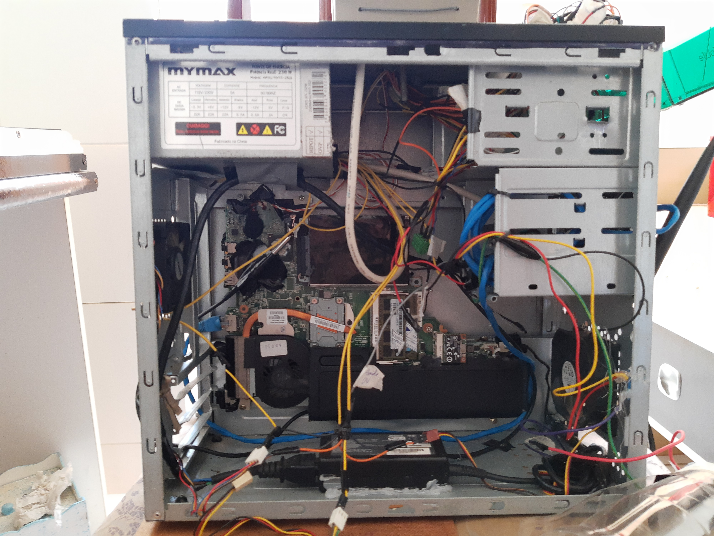
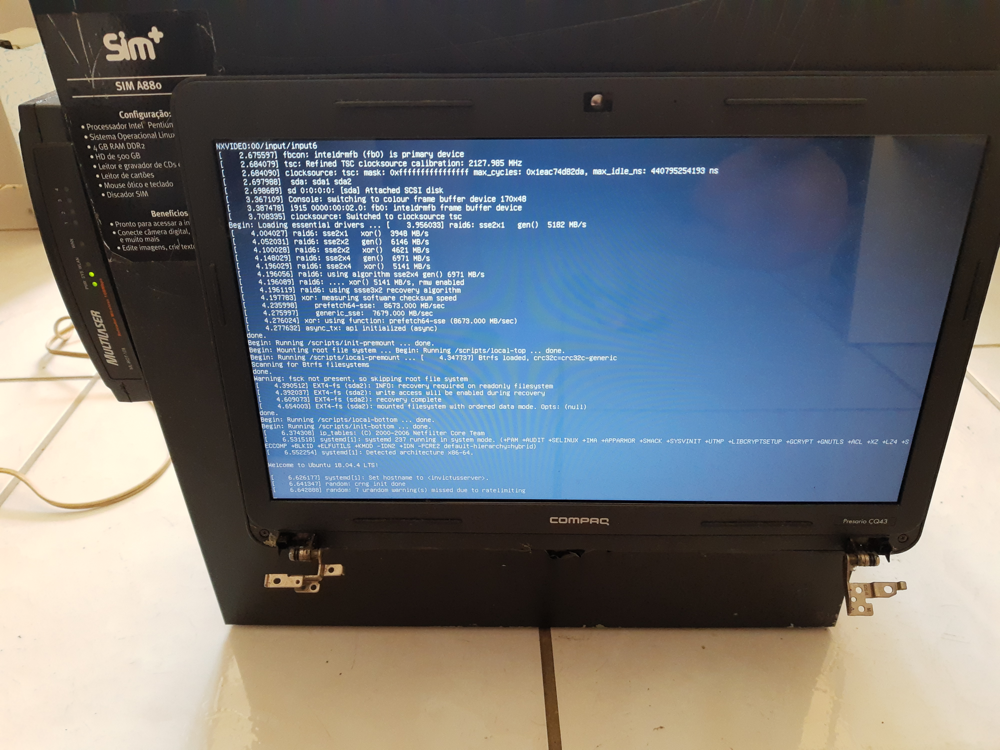
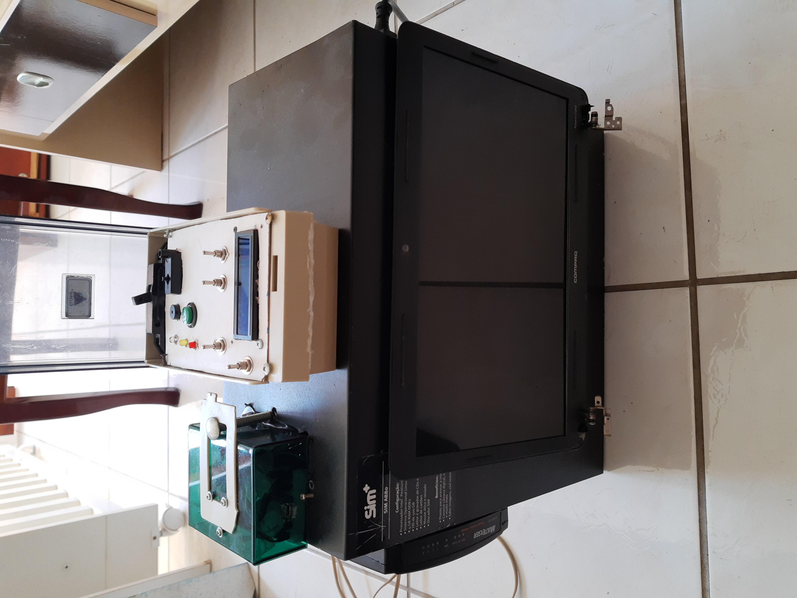
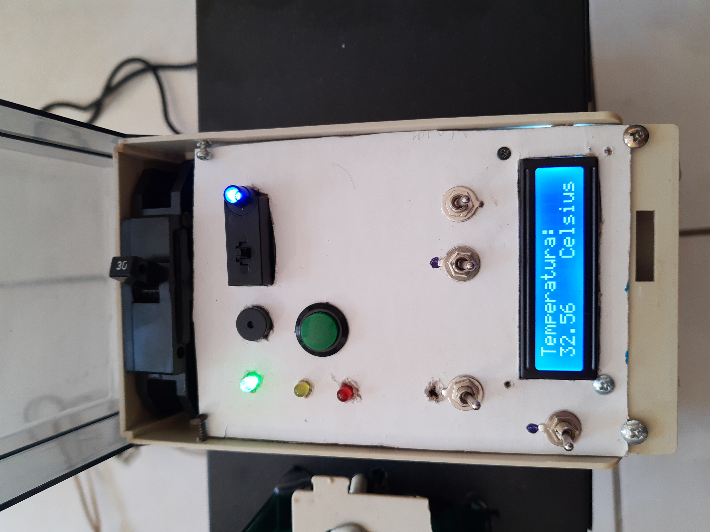
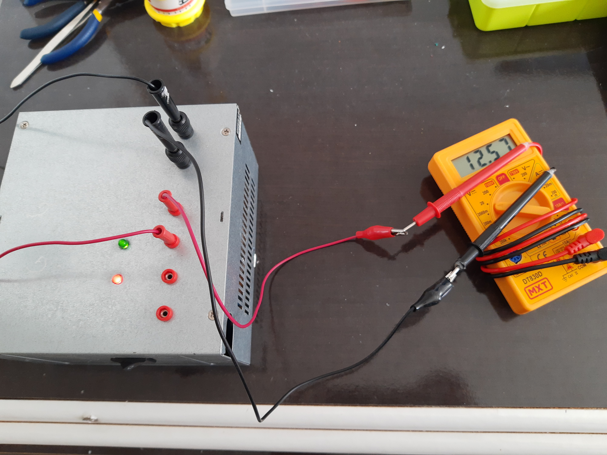
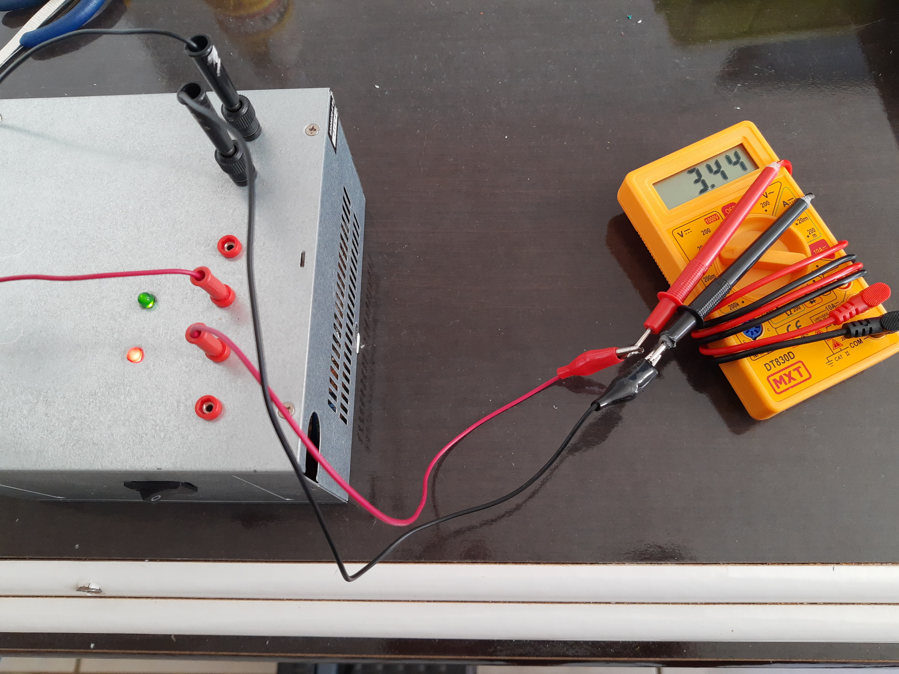
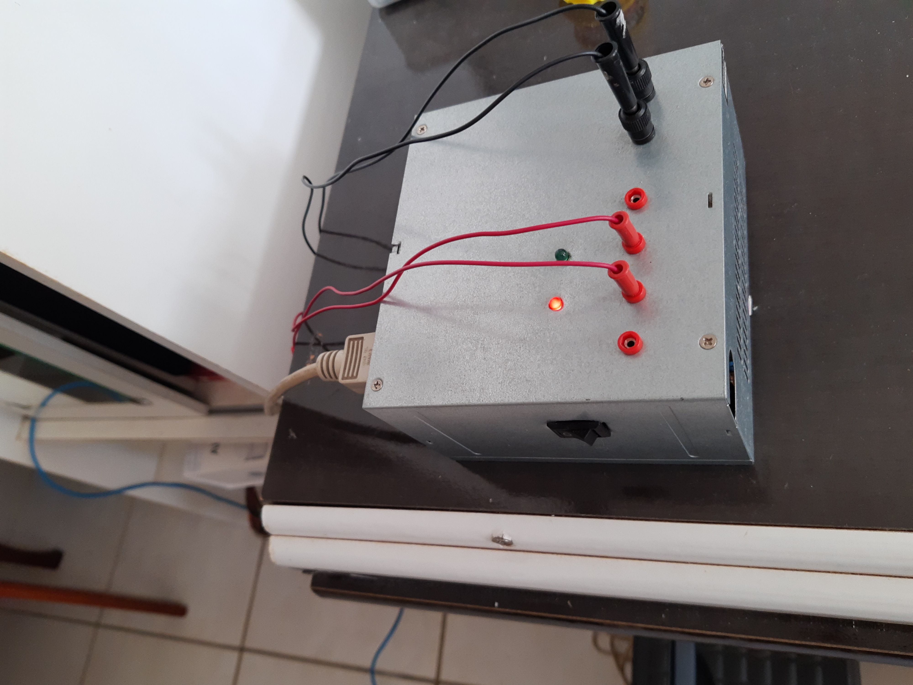

Projetos caseiros
Projeto Servidor
Projeto servidor teve como intuito desenvolver um servidor caseiro utilizando uma placa de notebook antigo e um arduino nano.
Foi utilizadoo HD do notebook e seu monitor para visualizar conteudo quase como um "mainframe".
   A função principal do arduino é de monitorar a temperatura e fazer o devido cuidado para o refrigeramento de todo o equipamento. O servidor conta com 2 sistema de refrigeração, o priario e o secundario, o primario ativa 4 cooler's, 2 deles joga ar frio direto nos pontos que mais aquecem, os outros 2 retiram o ar quente que tende a subir no sistema, o segundo sistema de refriggeração ativa uma pequena turbina. Em caso de superaquecimento o arduino detecta a alta temperatura e envia um alerta sonoro e visual, caso não seja resfriado dentro de um tempo pré-determinado, o sistema automaticamente efetua o desligamento geral apra evitar danos.
Fonte de Bancada
Uma fonte de bancada simples construida com base em uma fonte padrão de um gabinete de desktop de mesa convencional.
  A fonte tem o fio verde que passa por um interruptor (o fio verde é quem ativa ou desativa o funcionamento da fonte), temos dois led's onde um deles é o standby e o outro é o led de ativação. Há 4 saidas de energia e duas GND, cada saida tem sua tensão, sendo elas -12, 3.3, 5 e 12 volts.
Internamente a fonte esta ligada a um resistor de 5W de potencia para poder consumir elergia quando ligada, pois o mesmo funciona melhor tendo um consumo minimo de energia (serve para melhorar o funcionamento da fonte).